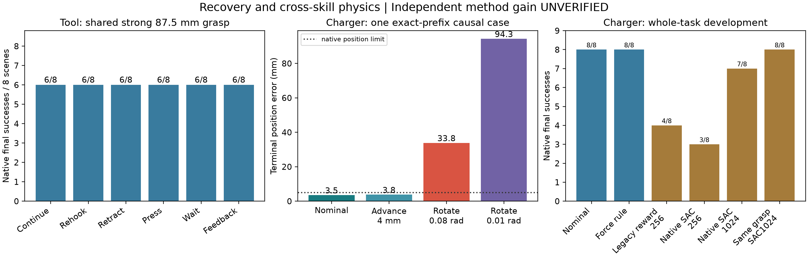
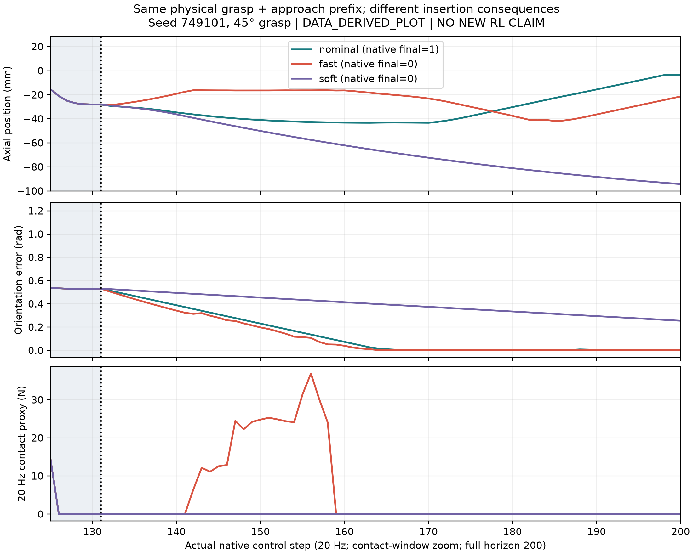

Independent method gain: UNVERIFIED · Public simulator physics · No hardware
From 525d67e · 354 complete episodes · 64,400 control steps + 207 partial steps
Executable parameters change contact physics, but stronger predecessor choices cover every observed improvement. Ordinary native-success SAC improves from 3/8 to 7/8; strong nominal remains 8/8.

Development data, one training seed. Legacy reward is a different-objective diagnostic, not a fair new-method comparator. Middle panel isolates one factor on exactly matched physical prefixes.
749101: identical physical 45-degree grasp prefix. Only angular cap changes (.04 versus .08 rad); full 200-step native episodes. Close view highlights contact; projected guides can be occluded.
Full RAW video · Clickable synchronized curves · Source/frame manifest
749143: same initial state, different grasp decisions. Nominal15deg succeeds; learned18.384deg fails to grasp. This is not a same-prefix insertion comparison.
Full RAW video · Clickable synchronized curves · Source/frame manifest

Combined-fast/soft diagnostic. Isolated angular/advance tests in the central figure separate the competing explanations.
| Run / policy | Success | Control steps | Planner queries | Planner seconds | Wall seconds |
|---|---|---|---|---|---|
| charger_design/nominal | 10/12 | 2400 | 598 | 0.593 | 61.64 |
| charger_design/fast | 7/12 | 2400 | 501 | 0.554 | 61.38 |
| charger_design/soft | 9/12 | 2400 | 693 | 0.592 | 60.29 |
| charger_design/feedback | 8/12 | 2400 | 520 | 0.624 | 60.64 |
| charger_eval/nominal | 8/8 | 1600 | 277 | 0.217 | 43.94 |
| charger_eval/force_guard | 8/8 | 1600 | 274 | 0.226 | 44.29 |
| charger_eval/dense_256 | 4/8 | 1600 | 409 | 0.461 | 40.54 |
| charger_eval/sparse_256 | 3/8 | 1600 | 396 | 0.456 | 36.48 |
| charger_eval/sparse_1024 | 7/8 | 1600 | 312 | 0.334 | 42.38 |
| charger_eval/matched_sparse_1024 | 8/8 | 1600 | 323 | 0.227 | 45.00 |
| charger_factorial/nominal | 2/2 | 400 | 86 | 0.020 | 10.11 |
| charger_factorial/advance_fast | 2/2 | 400 | 86 | 0.020 | 9.96 |
| charger_factorial/rotate_fast | 1/2 | 400 | 88 | 0.020 | 9.98 |
| charger_factorial/advance_soft | 1/2 | 400 | 102 | 0.023 | 9.79 |
| charger_factorial/rotate_soft | 1/2 | 400 | 88 | 0.020 | 9.79 |
| charger_factorial/force_guard | 2/2 | 400 | 86 | 0.020 | 9.91 |
| charger_matched/nominal | 3/3 | 600 | 116 | 0.026 | 15.30 |
| charger_matched/fast | 2/3 | 600 | 116 | 0.027 | 15.19 |
| charger_matched/soft | 2/3 | 600 | 145 | 0.032 | 14.83 |
| charger_matched/feedback | 2/3 | 600 | 116 | 0.027 | 15.32 |
| charger_physics_m0.5_f0.2/nominal | 2/4 | 800 | 121 | 0.268 | 19.58 |
| charger_physics_m0.5_f1.0/nominal | 2/4 | 800 | 121 | 0.274 | 19.59 |
| charger_physics_m2.0_f0.2/nominal | 3/4 | 800 | 169 | 0.215 | 20.38 |
| charger_physics_m2.0_f1.0/nominal | 3/4 | 800 | 169 | 0.202 | 20.33 |
| charger_sac/ordinary_sac | 7/9 | 1800 | 385 | 0.396 | 44.61 |
| charger_sac_corrected/ordinary_sac | 29/45 | 9000 | 1768 | 2.375 | 222.62 |
| charger_sac_sparse/ordinary_sac | 76/100 | 20000 | 4087 | 4.895 | 516.51 |
| tool_early/none | 0/4 | 400 | 133 | 0.743 | 15.10 |
| tool_early/rehook | 0/4 | 400 | 136 | 0.859 | 15.06 |
| tool_early/retract | 0/4 | 400 | 137 | 0.767 | 15.11 |
| tool_early/press | 0/4 | 400 | 133 | 0.745 | 14.72 |
| tool_pilot/none | 6/8 | 800 | 261 | 1.632 | 29.53 |
| tool_pilot/rehook | 6/8 | 800 | 272 | 1.801 | 29.82 |
| tool_pilot/retract | 6/8 | 800 | 275 | 1.708 | 29.74 |
| tool_pilot/press | 6/8 | 800 | 267 | 1.904 | 29.93 |
| tool_pilot/hold | 6/8 | 800 | 261 | 1.657 | 29.50 |
| tool_pilot/feedback | 6/8 | 800 | 262 | 1.664 | 29.55 |
Training and repeated diagnostic episodes are not independent test cases. Partial steps and model update budgets are separately recorded in SUMMARY.json.
README · Pairing audit · Archive SHA manifest · Prior-art scope
# Recovery and cross-skill physics — 2026-11-02 **Independent RL method gain: UNVERIFIED.** Continuation of 525d67e. Open REVIEW.html for the key figure, complete videos, synchronized measured curves and raw sources. These are public simulator experiments, not robot deployment evidence. ## Scientific result PullCubeTool100: with the strongest 87.5 mm grasp and shared controller, continue / rehook / retract-reapproach / press / wait / feedback all achieved 6/8 on the same eight development scenes (48 episodes). Early effective-contact interventions on four difficult cases all achieved 0/4 (16 episodes). No rescue or regression was found. Case 748103 fails TRANSFER planning before a successor decision; 748105 has unproductive tilted contact and unsuccessful rehook planning. A planner failure is not a proof of geometric infeasibility. Freeze these assets rather than expand recovery RL on this outcome-invariant panel. We then actually ran native PlugCharger-v1, 200 steps, with real grasp pitch (15–45 degrees) followed by repeated executable advance (0.5–4 mm) and angular increments (0.01–0.08 rad). No observation bias or Y/Z offset action was introduced. All methods share the inherited depth-preserving geometric servo, integral correction, IK and joint increment limit. The inherited prefix stride of two is retained; this is not a new native trajectory safety claim. In the 48-episode design panel, nominal / fast / soft / feedback scored 10/12, 7/12, 9/12, 8/12 across four scenes and three grasps. Some 45-degree planner prefixes differed: these are NOT strict causal pairs. We therefore replayed the saved nominal joint commands through fresh continuous physics, without setting physical states. Measured prefix state error was zero. The 12 matched and 12 factorial episodes distinguish angular collision from insufficient time: on 749101, nominal and faster advance succeed; faster angular alignment fails; very slow rotation or advance exhausts the available budget. Contact can occur while forward advance is disabled. The earlier 'fast advance causes contact' explanation is rejected. Joint clipping coincides with contact but has not been established as its cause. The key figure's middle panel is the single-factor experiment, not the combined-fast trial. Its 5 mm position line is only one part of the unchanged native success condition. The additional CAUSAL_TRACE shows combined fast/soft controls; do not interpret it alone as an isolated-factor intervention. ## Real ordinary RL, including negative training attempts A two-boundary ordinary SAC uses actual SkillResult/state, the same legal actions, remaining budget and finite-horizon gamma=1. Stage-zero unused action is masked. A failed grasp terminates the skill decision process while the physical episode still completes its native horizon. No candidate novelty is claimed. We preserved an initial 97-transition smoke run (zero updates), then a 444-transition run (632 updates) with the inherited contact-only dense reward. The reward audit found that predecessor-dependent initial potential was omitted; contact-only shaping is not whole-task telescoping shaping. This is a baseline objective defect, not an independent method. Its policy behavior cannot be causally attributed to this defect alone from one training seed. A corrected native-success-only SAC collected 1,024 recorded transitions, 1,792 update iterations, 100 full episodes / 20,000 steps plus 91 partial steps. Training seed 31181, scenes 749120–749135, 128x128 networks, alpha .02, learning rate .0003, batch64, warmup128, two updates per decision. INITIAL and 256/512/768/1024 checkpoints and buffers are retained. All 1,024 transitions were independently reconstructed from physical trajectories: maximum observation error 2.384e-7; action/reward/done errors zero. This is a bounded working baseline, not a convergence or multi-seed claim. On eight new DEVELOPMENT scenes 749140–749147 (never sealed test): | Method | Native final success | |---|---:| | Strong nominal, 15-degree grasp | 8/8 | | Geometric contact force guard, same grasp | 8/8 | | Legacy contact-reward SAC256 (objective diagnostic) | 4/8 | | Native-success SAC256 | 3/8 | | Native-success SAC1024 | 7/8 | | Same 15-degree predecessor + SAC1024 successor | 8/8 | Full SAC1024 has zero rescues and one regression relative to nominal. Its failure 749143 selects 18.384 degrees and fails to grasp; it is not an insertion failure. The same-prefix successor experiment removes this predecessor difference. No evidence establishes a useful advantage over the strong fixed policy. We also executed the existing named ARES-AdaptivePlug-v0 construction-time density/friction variant: two scenes 749160/161, mass scales .5/2 and socket friction .2/1. The 15-degree nominal policy scores 8/8 conditions, versus 2/8 at 45 degrees. These are only two independent scene clusters, not eight independent tasks, and are NOT official native benchmark scores. Constructed masses are 14.5536 / 58.2144 g. Friction is configured, not experimentally identified. No additional network was trained on this covered panel. ## Evidence, costs and limits 354 complete episodes, 64,400 control steps, plus 207 saved partial steps. SUMMARY.json contains every source SHA, per-method wall time, planner query count/time, physical steps and training checkpoint budgets. Recorded training transitions total 1,565 and update iterations 2,424 across all three runs; do not sum checkpoint counters. Control selections for fixed policies are not RL optimization. Selected versus recorded decisions can differ at an interrupted transition. Both interrupted attempts, syntax-only failure, dependency snapshots and negative trajectories remain archived. Charger contact force is a sampled 20 Hz proxy, not a 100 Hz peak measurement. Videos are measured-pose replay, with zero new physics, 201 frames at 20 fps (initial plus 200 steps), maximum pose readback error 1.192e-7. Geometric projected guides are not contact patches. video_contact isolates angular increment on identical 45-degree prefixes; video_learning compares the same initial scene with different learned/nominal grasp decisions. RAW means unannotated measured-pose render, not an original live camera recording. Static figures/video frames and encoded frame counts were checked; browser playback/click interaction was not automatically verified because local-file access was blocked by browser policy. The tool early no-op event logger originally overwrote its first-event metadata. Analysis reconstructs the first event from force and interval cube movement and verifies prefixes; physical commands and original records remain unchanged. The source now prevents the overwrite. Evaluation source snapshots include an explicitly labeled post-launch dependency snapshot, not a pre-launch attestation. Existing STAP, log-Q repair, strong controllers and prior evidence are retained. STAP/Foresight have not been newly evaluated on this charger action interface; no novel-method comparison is asserted. Single-seed training, small development panels and remaining predecessor failures preclude publication-level superiority claims. ## Reproduce / inspect RAW_MANIFEST.json indexes compressed archives and every decompressed member SHA, models, buffers, source snapshots and visible assets. From repository root: ```bash python research/skill_handoff_lab/tools/restore_post_contact_evidence.py --package research/skill_handoff_lab/research_program/evidence/EXP-003/2026-11-02/recovery --out /tmp/ares-recovery-copy --portable python research/skill_handoff_lab/tools/analyze_recovery_physics.py --root /tmp/ares-recovery-copy python research/skill_handoff_lab/tools/report_recovery_loop.py --root /tmp/ares-recovery-copy ``` Use the pinned environment in ENVIRONMENT.json. Physical reruns must use bash research/skill_handoff_lab/tools/handoff_offline.sh and the saved per-run protocol/source; this preserves network isolation and read-only ARES-R. Portable restore relocates JSON paths with original metadata retained, never rewrites physical gzip trajectories or weights. ## Decision Retain strict physical-prefix replay, contact/action authority instrumentation, actual two-boundary native-success SAC and transition reconstruction. Freeze the tested tool recovery and charger pace panels: current improvements are covered by strong predecessor/control choices. The next informative experiment must expose a genuine changed successor contract or physically justified grasp constraint that leaves repeated full-task residual failures after the strongest shared control, before allocating further RL budget. Do not narrow grasp permissions merely to force failures, expand old yaw networks, or repair one 45-degree example indefinitely. The paper question stays task-conditioned multi-stage executable skill adaptation; independent algorithm gain remains UNVERIFIED.